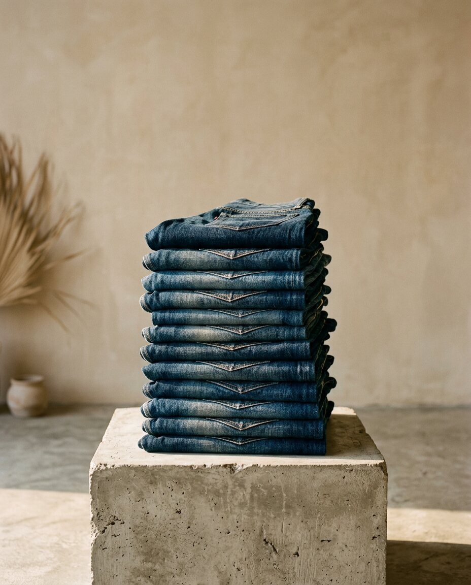
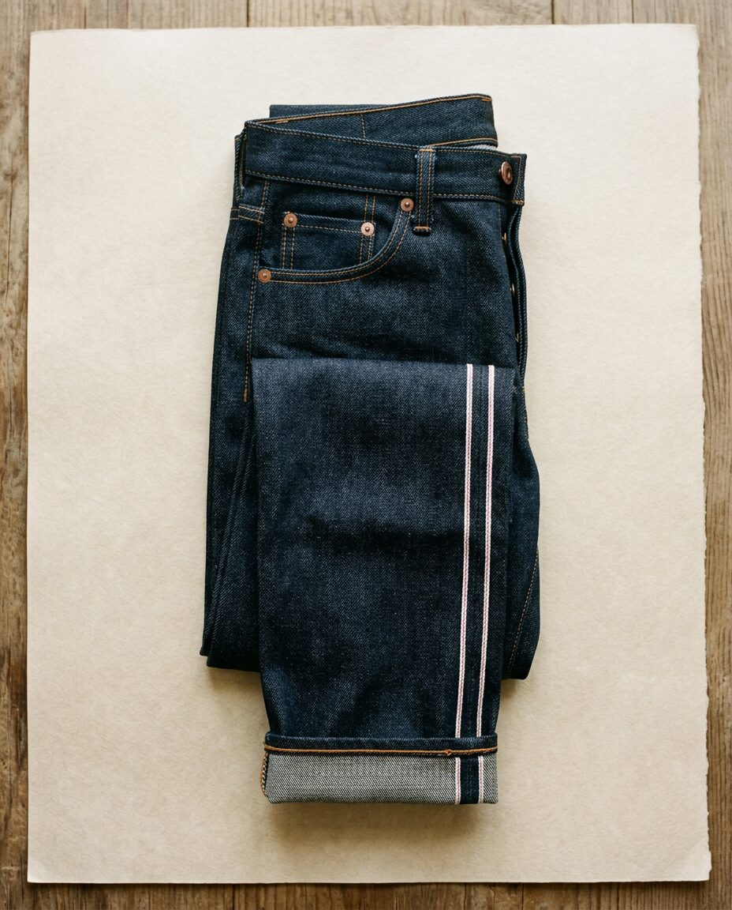
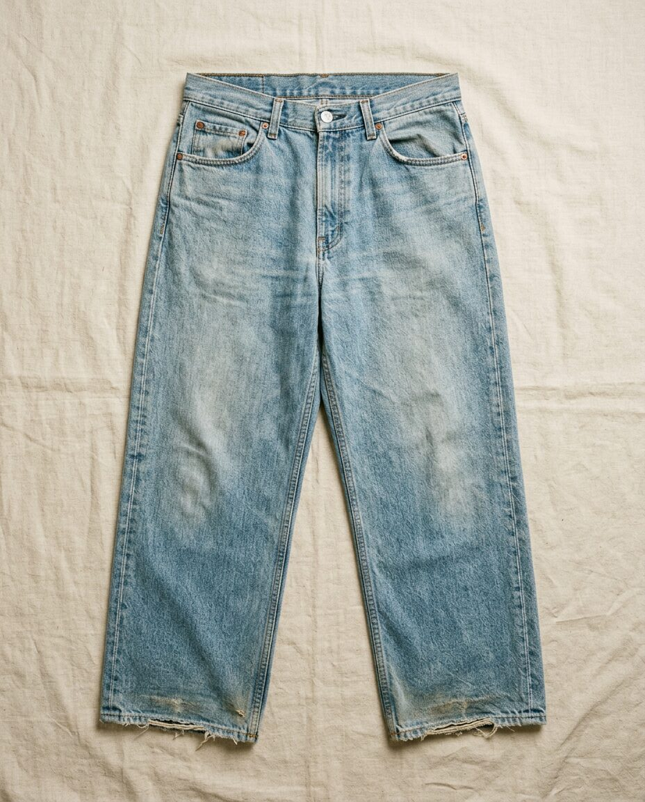
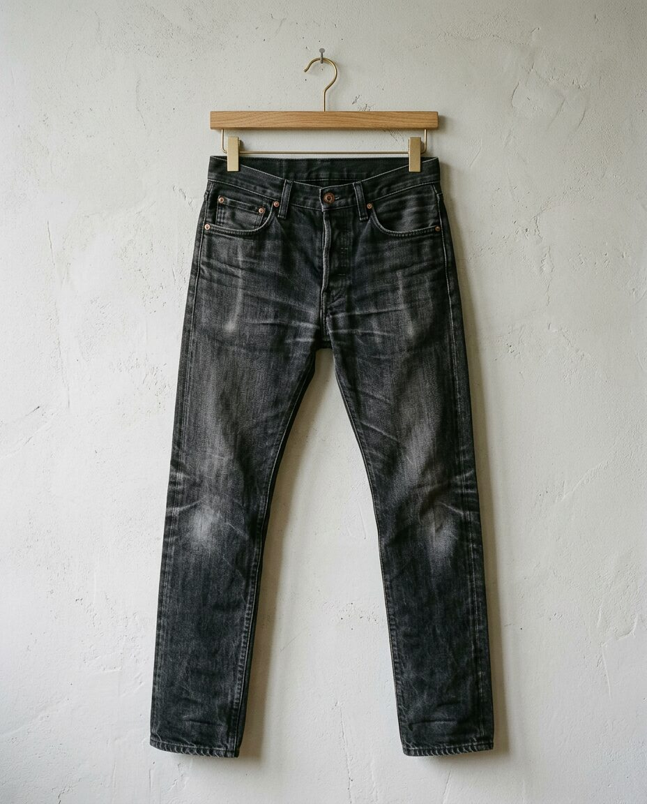
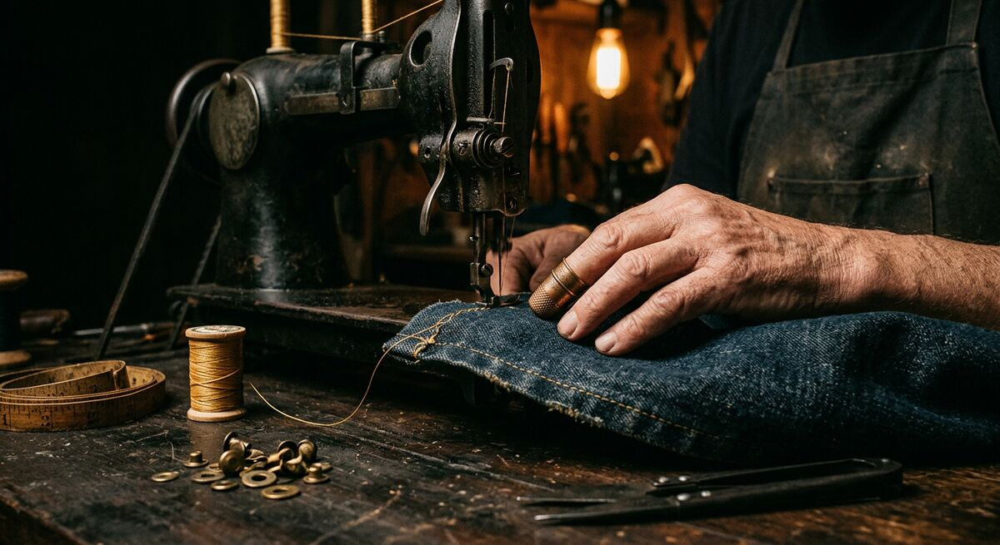
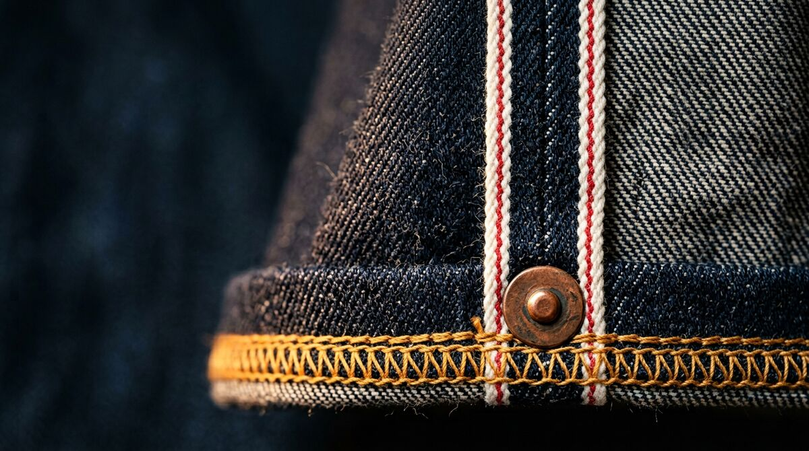
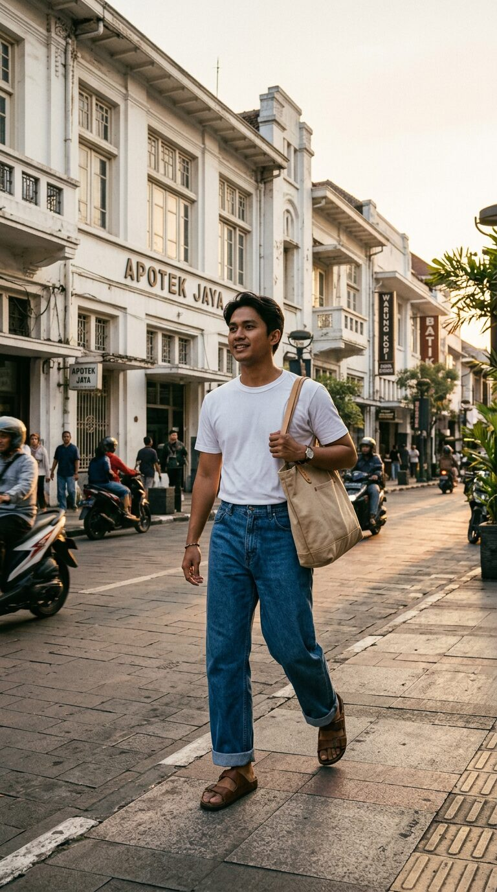
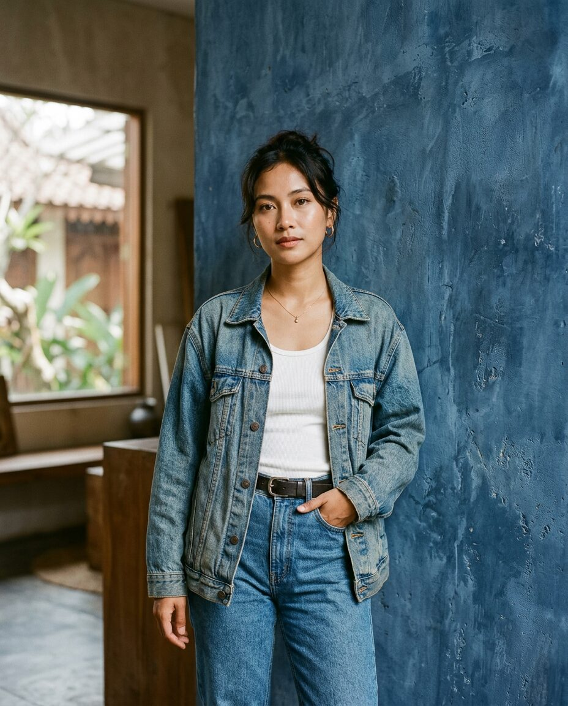
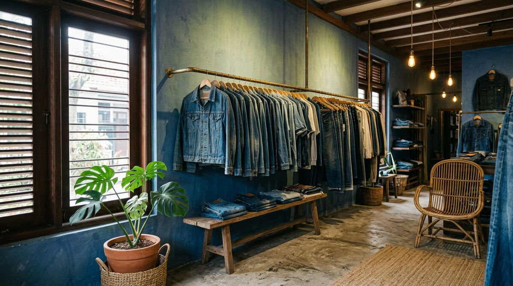

Disortir tangan, bukan disemprot.
Setiap bal dibuka di gudang kami di Bandung. Yang berlubang di tempat yang salah kami tolak; yang punya cerita kami simpan, perbaiki, dan sebut apa adanya — termasuk noda yang tidak mau hilang.
Kami membuka bal impor yang tidak pernah sampai ke lemari siapa pun, memilih sepotong demi sepotong, mencucinya, memeriksanya di empat belas titik, lalu mengukurnya di atas meja — bukan menebaknya dari label.
Bukan tumpukan thrift. Ini denim house: setiap potong punya nama, angka, dan riwayat yang bisa kami pertanggungjawabkan.

Drop 14 · difoto di studio CihampelasBukan karena kata “vintage”. Karena ada kerja di baliknya: sortir yang jujur, angka yang benar, dan harga yang tidak bersandiwara.
Setiap bal dibuka di gudang kami di Bandung. Yang berlubang di tempat yang salah kami tolak; yang punya cerita kami simpan, perbaiki, dan sebut apa adanya — termasuk noda yang tidak mau hilang.
Pinggang rata, rise, inseam, hem: empat angka yang menentukan apakah sebuah jeans benar-benar milikmu. Kami menulisnya di setiap kartu, dalam sentimeter, dari potongan yang sama yang akan kamu terima.
Tanpa harga coret, tanpa diskon palsu, tanpa hitung mundur yang diulang tiap minggu. Satu angka, dari kami ke kamu — dan kalau ada cacat, harganya sudah mencerminkan itu.
Empat potong difoto penuh dan bisa kamu lihat detailnya. Sisanya kami catat dalam manifest — karena 180 potong lebih cepat dijelajahi dengan angka daripada dengan foto. Semuanya sudah dicuci, diperiksa, dan diukur sebelum masuk daftar.
Jumat, 27 November 2026, 20.00 WIB. Online dan di studio Cihampelas. Tidak ada restock untuk potongan yang sama.
Pilihan kurator drop ini: potongan yang paling sulit diulang. Klik detail untuk melihat angka dan cacatnya.
LT-1401 — LT-1404
W32 L32 · 13,5 oz · pinggang 82 cm

W31 L34 · 14 oz · pinggang 79 cm

W34 L32 · 12 oz · pinggang 86 cm

W30 L32 · 11,5 oz · pinggang 76 cm
Filter berdasarkan potongan, ukuran, atau harga. Kolom “Grade” mengikuti panduan kondisi di bawah — bukan nilai jual, tapi kejujuran tentang apa yang akan kamu terima.
Straight · Amerika · 1980s · LT-1401
Straight · Jepang · 2010s · LT-1402
Baggy · Amerika · 2000s · LT-1403
Slim · Italia · 1990s · LT-1404
Trucker · Amerika · 1990s · LT-1405
Carpenter · Amerika · 1990s · LT-1406
Straight · Jepang · 1970s · LT-1407
Short · Amerika · 1990s · LT-1408
Relaxed · Amerika · 1990s · LT-1409
Chore · Prancis · 1980s · LT-1410
Wide · Amerika · 1970s · LT-1411
Carpenter · Amerika · 1990s · LT-1412
Straight · Amerika · 1980s · LT-1413
Wide · Turki · 2000s · LT-1414
Trucker · Amerika · 1980s · LT-1415
Slim · Jepang · 1990s · LT-1416
Relaxed · Italia · 2000s · LT-1417
Chore · Jepang · 2000s · LT-1418
Straight · Amerika · 1990s · LT-1419
Trucker · Jepang · 1970s · LT-1420
Foto hanya untuk empat potong pilihan. Enam belas lainnya difoto ulang per permintaan sebelum dikirim — kamu selalu melihat potongan yang benar sebelum membayar.
Tidak ada potong yang lolos tanpa dibuka, dibalik, dan diperiksa dua kali: sekali saat sortir, sekali saat difoto. Ini yang membuat kami berani menulis “Grade B” tanpa takut kehilangan pembeli.
Bal dibeli langsung dari eksportir Jepang, Amerika, dan Eropa — bukan dari perantara yang mencampur kualitas. Satu bal, satu asal, bisa dilacak sampai kota pelabuhannya.
Selangkangan, lutut, paha, saku, ritsleting, kancing, jahitan, hem, label, lining, pinggang, kampuh, tambalan, dan bau. Satu titik gagal, potong itu turun grade — dan tetap kami tulis apa adanya.
Air dingin dan ozon, tanpa pemutih. Jahitan yang lepas diperbaiki dengan benang katun sewarna. Tambalan boro hanya kami tambahkan jika diminta — cerita potongan tetap milik pemilik sebelumnya.
Pinggang rata, rise, inseam, hem — diukur dua orang, dicatat dua kali. Foto memakai cahaya apa adanya, tanpa filter yang menyembunyikan noda.

“Kami tidak menjual like new. Kami menjual sudah diperiksa.”
Rani & Bagas — pendiri, sejak 2016Merek hanya bercerita soal asal. Yang menentukan apakah jeans ini akan kamu pakai setiap minggu adalah potongan dan angka di atas meja. Lima keluarga potongan yang kami simpan:
Lurus dari pinggul ke hem, tanpa mengecil di betis. Ini potongan yang paling jarang salah dan paling lama dipakai: ia duduk di atas sepatu kulit, sneakers rendah, bahkan sandal. Kalau kamu baru mulai mengoleksi denim, mulai dari sini.
Lihat 5 potongan straightLonggar di paha dan pinggul, lalu jatuh lurus tanpa melebar. Potongan kerja tahun 90-an yang akhirnya kembali masuk kantor, kampus, dan perjalanan darat. Nyaman untuk naik motor Bandung tanpa terlihat seperti piyama.
Lihat 2 potongan relaxedLebar dari pinggang ke hem dengan kain yang berat, sehingga jatuhnya lurus dan tenang. Perhatikan panjangnya: wide leg paling baik saat hem menyentuh punggung sepatu, bukan menggantung di atasnya.
Lihat 2 potongan widePinggang lebih rendah, hem lebar, dan tumpukan kain di atas sepatu. Ini potongan yang paling toleran terhadap ukuran — tetapi paling butuh atasan yang rapi agar tidak tenggelam. Satu potong di drop ini.
Lihat 1 potongan baggyMengecil perlahan dari lutut ke hem. Slim vintage tidak seketat slim baru: kainnya lebih kaku, jahitannya lebih kuat, dan biasanya punya rise yang lebih tinggi sehingga tidak melorot. Ukur paha, bukan hanya pinggang.
Lihat 2 potongan slimDua pertanyaan. Jawabannya bukan jaminan, tapi titik awal yang jauh lebih baik daripada menebak dari label.
Label vintage berbohong dengan sopan. W32 dari 1987 belum tentu 32 inci hari ini: kapas menyusut, pinggang melar, dan cuci panas mengubah segalanya. Karena itu setiap potong kami ukur rata di meja — dan angka itulah yang kamu lihat di manifest, bukan angka di label.
Kancing tertutup, jeans diletakkan rata, ukur dari ujung ke ujung pinggang. Kalikan dua untuk lingkar. Ini angka paling penting — bukan W di label.
Dari kampuh selangkangan ke atas pinggang, diukur lurus. Rise 27 cm terasa rendah; 31 cm terasa tinggi di tubuh rata-rata.
Dari kampuh selangkangan sampai hem, di sepanjang sisi dalam kaki. Ini panjang yang menentukan jatuh di sepatu.
Lebar kaki di ujung. Bandingkan dengan jeans yang sudah kamu punya dan suka — cara paling cepat menebak siluet.
| Label | Pinggang rata | Lingkar inci | Pinggul | Rise umum | Inseam umum |
|---|---|---|---|---|---|
| W28 | 71 cm | 28 in | 94 cm | 26 cm | 76 cm |
| W29 | 73,5 cm | 29 in | 96 cm | 26,5 cm | 77 cm |
| W30 | 76 cm | 30 in | 98 cm | 27 cm | 78 cm |
| W31 | 79 cm | 31 in | 101 cm | 27,5 cm | 79 cm |
| W32 | 81 cm | 32 in | 103 cm | 28 cm | 80 cm |
| W33 | 84 cm | 33 in | 106 cm | 28,5 cm | 80 cm |
| W34 | 86 cm | 34 in | 108 cm | 29 cm | 81 cm |
| W36 | 91 cm | 36 in | 113 cm | 30 cm | 82 cm |
| W38 | 96 cm | 38 in | 118 cm | 31 cm | 82 cm |
| W40 | 101 cm | 40 in | 123 cm | 32 cm | 83 cm |
Jatuh lembut, tidak gerah. Paling nyaman untuk siang Bandung yang panjang.
Seimbang: cukup tebal untuk berdiri sendiri, cukup lentur untuk dipakai harian.
Kaku di awal, melunak setelah dipakai. Butuh tiga bulan sebelum benar-benar jatuh.
Berat, panas, dan sangat tahan lama. Jarang di drop ini — dan selalu cepat habis.
Cara cepat: ambil jeans yang paling nyaman di lemarimu, tutup kancingnya, letakkan rata, dan ukur pinggang serta inseamnya. Kirim dua angka itu ke WhatsApp toko — kami carikan potongan yang paling dekat, termasuk yang belum difoto.
Kami memakai empat tingkat kondisi yang sama untuk setiap potong, dari trucker 1970-an sampai short 90-an. Tidak ada grade yang berarti “sempurna” — hanya berarti “inilah yang akan kamu temukan saat paket dibuka”.
Aus halus di hem dan kantong, tidak ada lubang, jahitan lengkap. Siap dipakai keluar toko.
Satu-dua jahitan kecil sudah dirapikan. Fade natural di lutut dan paha. Struktur kain penuh.
Fade lutut, hem sedikit frayed, saku bergesek. Semua sudah diperbaiki atau ditulis di kartu.
Tambalan, lubang kecil yang ditutup, atau fade berat. Harga turun; cerita naik.
Kami tidak menebak tahun dari warna. Empat penanda di bawah ini yang paling sering dipakai tim sortir kami — berguna juga saat kamu berburu di pasar loak.
Bukan untuk memburu merek, tetapi untuk memastikan kamu membayar denim, bukan cerita. Kalau labelnya sudah hilang, kami menulis “tanpa label” dan menyesuaikan harganya.
Cuci lebih jarang, keringkan lebih sabar. Lima aturan yang kami tempel di dinding studio — dan yang kami kirim bersama setiap paket.
Balik jeans, kancing ditutup, cuci air dingin dengan deterjen cair tanpa pemutih. Untuk raw denim, tunggu minimal tiga bulan pemakaian sebelum cuci pertama — bukan karena mistis, tetapi agar fade terbentuk di tempat yang benar.
Pemutih menghancurkan indigo dan serat kapas sekaligus. Pelembut meninggalkan lapisan yang membuat kain kehilangan kekakuan khasnya. Kalau ingin lebih lembut, cukup pakai lebih sering.
Matahari Bandung bisa memudarkan indigo dalam satu sore. Jemur terbalik di bawah naungan, dengan hem di atas agar air turun. Jangan pernah memakai mesin pengering — panasnya yang membuat jeans menyusut tidak rata.
Noda oli: taburi bedak bayi, diamkan satu jam, lalu sikat lembut. Noda lumpur: biarkan kering, baru disikat. Menggosok basah hanya menyebarkan noda ke serat yang lebih dalam.
Jeans berat sebaiknya digantung di klip pinggang agar jahitan tidak terlipat lama. Untuk koleksi, gulung dengan kertas bebas asam dan simpan di tempat kering — Bandung yang lembap adalah musuh utama kain katun.

Bandung memberi kami dua hal yang tidak dimiliki kota lain: udara dingin yang membuat denim berat terasa masuk akal, dan jalanan yang membuat setiap potongan harus benar-benar bisa dipakai berjalan.



“Denim terbaik tidak dibeli karena baru. Ia dibeli karena sudah terbukti bertahan.”
Lawas Denim House — Cihampelas, Bandung
Studio kami kecil dan sengaja begitu: satu rel, satu meja ukur, dan cukup kursi untuk tiga orang. Datang tanpa janji temu, atau minta kami siapkan ukuranmu sebelum kamu tiba.
Jl. Cihampelas No. 118, Tamansari
Bandung Wetan, Kota Bandung 40116
Jawa Barat, Indonesia
Sejak 2019 kami memasok lebih dari enam puluh reseller di Jawa, Sumatra, dan Bali. Setiap bal dibuka dan difoto, jadi kamu tahu isinya sebelum membayar — bukan beli, buka, berdoa.
Campuran straight, relaxed, dan trucker. Foto per potong dikirim lebih dulu; kamu pilih sendiri, sisanya kami simpan untuk drop berikutnya.
Diskon 10% dari harga manifestBisa minta komposisi: 60% jeans pria, 25% jeans wanita, 15% atasan denim. Dikirim dalam satu koli, dengan daftar ukuran per potong.
Diskon 15% dari harga manifest45–60 potong yang sudah disortir Grade A–B, langsung dari gudang. Cocok untuk toko yang butuh isi rak cepat.
Harga borongan, ongkir kargo per kotaMinimum lima potong. Tanpa biaya langganan, tanpa kontrak. Sebutkan kota dan komposisi yang kamu cari — kami balas dengan foto dan harga dalam satu hari kerja.
Mulai dari manifestKalau pertanyaanmu belum ada di sini, kirim pesan lewat WhatsApp toko — kami balas pada jam buka, bukan dengan bot.
Setiap potong berasal dari bal impor yang kami buka sendiri di gudang Bandung, lalu diperiksa empat belas titik. Label, ritsleting, kancing, dan pola aus dicatat apa adanya. Kalau label sudah hilang, kami menulis “tanpa label” di kartu produk dan menyesuaikan harganya.
Tambahkan potongan ke tas, lalu salin ringkasan pesanan dan kirim ke WhatsApp toko. Pesanan dikonfirmasi maksimal 3 jam pada jam buka, dengan ukuran dan kondisi difoto ulang sebelum dikirim.
Bisa. COD Bandung Raya tanpa biaya untuk pembelian di atas Rp 300.000, atau ambil sendiri di studio Jl. Cihampelas No. 118. Di luar Bandung, pengiriman lewat kurir dengan ongkir sesuai berat.
Kami mengirim ke seluruh Indonesia lewat kurir reguler dan kargo untuk pembelian banyak. Jeans dilipat dengan kertas, dimasukkan ke kantong kain, lalu ke plastik kedap. Nomor resi dikirim hari yang sama.
Bisa, sekali, dalam 3 hari setelah paket diterima, selama label gantung masih utuh. Biaya kirim balik ditanggung pembeli. Karena setiap potong hanya satu, penukaran berlaku untuk potongan lain dengan nilai yang sama atau lebih tinggi.
Semua jeans dicuci dengan air dingin dan ozon sebelum difoto, kecuali potongan raw yang sengaja dijual belum dicuci — statusnya selalu ditulis di kartu produk.
Karena jeans yang punya cerita tidak selalu mulus. Grade B berarti fade berat, hem frayed, atau tambalan lama yang masih kuat. Semua cacat difoto dan ditulis, dan harganya turun mengikuti kondisi.
Tidak untuk potongan yang sama. Setiap drop berisi 180 potong dan tidak diulang. Drop berikutnya diumumkan lewat pengingat kalender dan WhatsApp toko.
Untuk pembeli yang sudah pernah bertransaksi, kami membuka reservasi 24 jam sebelum drop lewat WhatsApp. Potongan tetap dianggap tersedia setelah pembayaran pertama diterima.
QRIS (semua e-wallet), transfer bank, GoPay/OVO/Dana, dan tunai di studio. Untuk pengiriman luar kota, pembayaran penuh sebelum paket dikirim.
Seratus delapan puluh potong, satu kali buka, tanpa restock. Simpan tanggalnya, atau datang langsung ke studio — kami buka sampai jam sembilan malam.